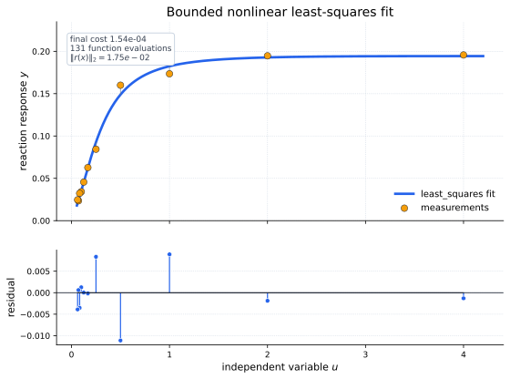
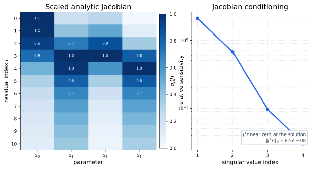
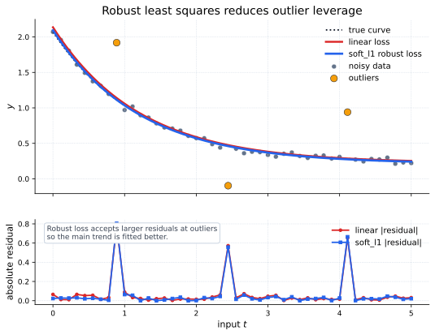

Core Idea
A residual function maps parameters to a vector of errors. SciPy's least-squares solver minimizes a robustified residual objective:
With the linear loss \(\rho(z)=z\), this reduces to the familiar Euclidean residual norm:
Bounded Enzyme-Reaction Fit
The SciPy tutorial uses an enzymatic reaction model with eleven residuals. For measurement \(u_i\) and response \(y_i\), the residual is

Jacobian Geometry
Least-squares solvers use the residual Jacobian \(J_{ij}=\partial r_i/\partial x_j\). Near a solution, the Gauss-Newton model is
Ignoring bounds and robust weights, the normal equations are

Robust Losses
Robust losses reduce the influence of large residuals. For example,
loss="soft_l1" behaves quadratically near zero but grows
more gently for outliers:

Using SciPy
In SciPy, pass the residual function to least_squares.
A closed-form Jacobian is usually worth providing when available.
import numpy as np
from scipy.optimize import least_squares
u = np.array([4.0, 2.0, 1.0, 5.0e-1, 2.5e-1, 1.67e-1, 1.25e-1,
1.0e-1, 8.33e-2, 7.14e-2, 6.25e-2])
y = np.array([1.957e-1, 1.947e-1, 1.735e-1, 1.6e-1, 8.44e-2,
6.27e-2, 4.56e-2, 3.42e-2, 3.23e-2, 2.35e-2, 2.46e-2])
def model(x, u):
return x[0] * (u**2 + x[1] * u) / (u**2 + x[2] * u + x[3])
def fun(x, u, y):
return model(x, u) - y
def jac(x, u, y):
J = np.empty((u.size, x.size))
den = u**2 + x[2] * u + x[3]
num = u**2 + x[1] * u
J[:, 0] = num / den
J[:, 1] = x[0] * u / den
J[:, 2] = -x[0] * num * u / den**2
J[:, 3] = -x[0] * num / den**2
return J
result = least_squares(
fun,
x0=np.array([2.5, 3.9, 4.15, 3.9]),
jac=jac,
bounds=(0, 100),
args=(u, y),
)
print(result.x)When To Use It
| Use least_squares when | Prefer minimize when |
|---|---|
| Your objective is naturally a vector of residuals from model fitting, calibration, or inverse problems. | The objective is a single scalar expression without meaningful residual structure. |
| You can provide a dense, sparse, or structured residual Jacobian. | You need general nonlinear constraints beyond simple parameter bounds. |
| You need robust losses to reduce outlier influence. | The loss and constraints are custom enough that direct scalar minimization is simpler. |